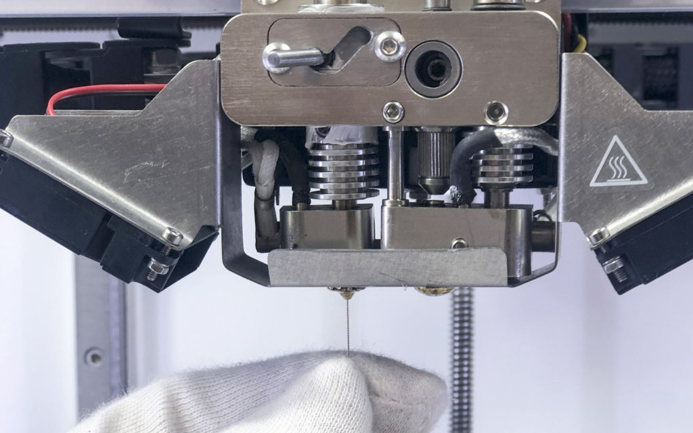
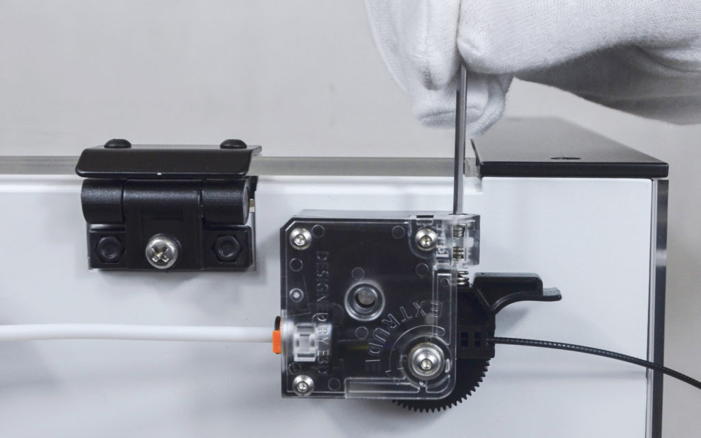
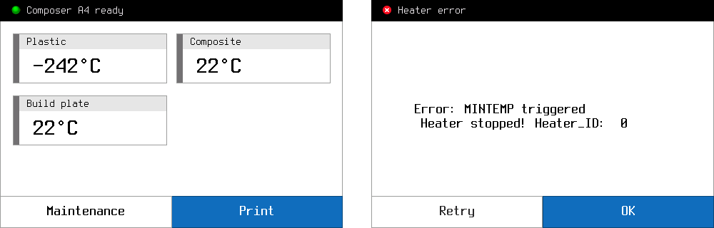
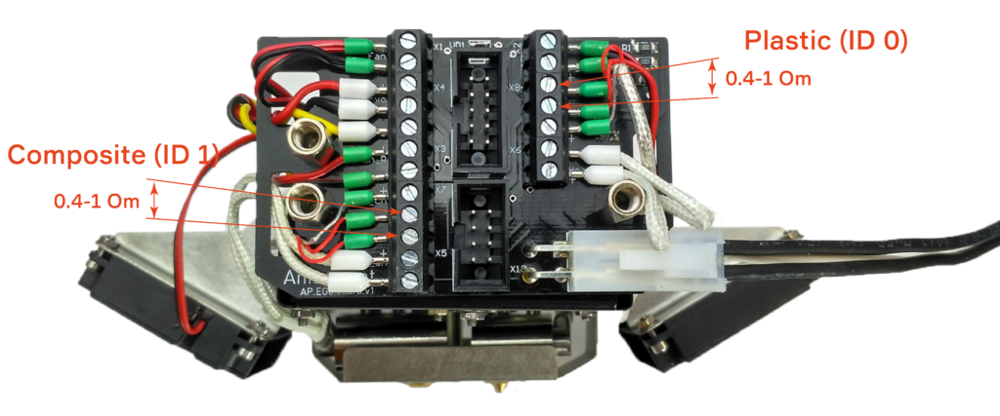
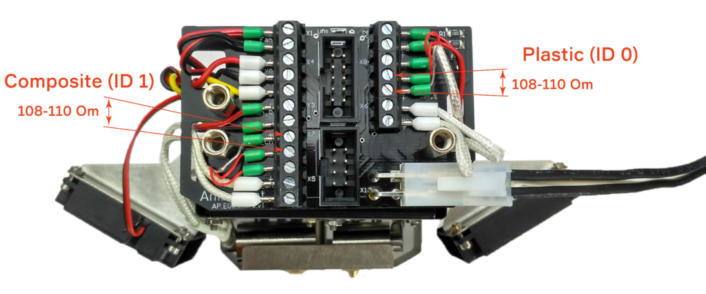
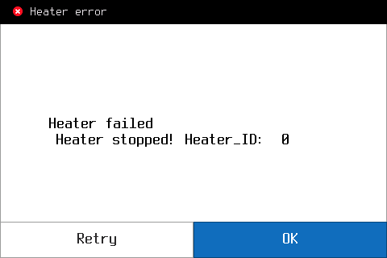
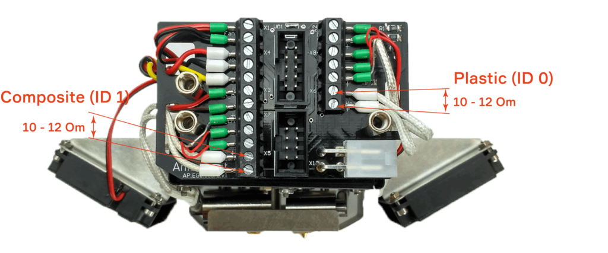

Verifique la temperatura de operación en la pantalla de la impresora, debe ser la misma que la recomendada por la fabricación de filamentos.
Lo más probable es que tenga mermelada de plástico dentro del descanso térmico. Para resolver este problema, debe desmontar la extrusora de plástico en orden inverso al montaje y limpiar el tubo de teflón
Bajo extrusión
Limpie el orificio de la boquilla con la aguja del kit de herramientas.

Muy a menudo, el problema con la subextrusión proviene de una configuración incorrecta de Aura. Intenta cambiar los parámetros responsables del flujo
El filamento no pudo presionarse lo suficiente en el alimentador, apriete el tornillo con la llave del kit para que la tuerca quede en el medio

Fuga de plástico
Si la boquilla no estaba lo suficientemente apretada, durante el montaje, el plástico podría filtrarse a lo largo del hilo hacia arriba y hacia abajo. Apriete la boquilla como se muestra en las instrucciones
Caer
La extrusora de plástico podría caerse si Fastern se hubiera aflojado. Consulte las instrucciones de montaje para solucionar este problema.
2)Extrusoras de conmutación #
Después de un trabajo largo e intensivo sin mantenimiento (más de 2-3 meses), es necesario reemplazar el lubricante en el mecanismo de elevación, consulte las instrucciones de montaje.
Si se produce un cambio sin éxito con la extrusora de plástico frío, significa que el plástico se ha solidificado entre la extrusora y el soporte y ha bloqueado el interruptor. Caliente el extrusor y limpie el soporte.
3)Alimentador de plástico #
Clics del alimentador
En la primera capa
La placa de construcción está demasiado cerca de la boquilla. Siguiendo las instrucciones para ajustar el nivel cero
En algunos casos, las retracciones provocan el sonido del clic, esto es normal.
En las siguientes capas:
Extrusora de plástico obstruida por alguna razón, revise el problema aquí
Configuración de aura seleccionada incorrectamente. Intente cambiar los parámetros para resolver sobre extrusión.
El filamento podría salir volando del carrete, girando alrededor del eje.
4)Errores de calentamiento #
Cuando algunas de las unidades de calefacción fallan, verá un error en la pantalla. Todos los errores de calentamiento tienen un número de identificación, que muestra la unidad en falla.
Heater_ID: 0 - extrusora de plástico
Heater_ID: 1 - extrusora compuesta
Heater_ID: 2 - placa de construcción
4.1.MINTEMP #
Hay dos opciones para obtener un error de temperatura mínima en el Composer.
En modo de espera, cuando ve una temperatura de -242 ° C en una de las extrusoras
Durante la impresión, cuando obtiene un error de activación MINTEMP

Este error se produce cuando Composer obtiene una temperatura de uno de los extrusores (Heater_ID) inferior a 10 C °
Para identificar la causa del error, debe verificar el sensor de temperatura. El procedimiento operativo será:
Apague la impresora
Retire la cubierta protectora del cabezal de impresión.
Deshabilitar cables planos
Mida la resistencia en los conectores definidos.

Si la resistencia medida es cercana a la correcta (0.4-1 Om), significa que el sensor de temperatura funciona bien. Deberá ponerse en contacto con su distribuidor local o escribirnos a support@anisoprint.com
4.2.MAXTEMP #
Hay dos opciones para obtener el error de temperatura máxima en el Composer.
En modo de espera, cuando ve una temperatura de 989 ° C en una de las extrusoras
Durante la impresión, cuando obtiene el error de activación MAXTEMP
Este error se produce cuando Composer obtiene una temperatura de más de 275 ° C de uno de los extrusores (Heater_ID) o más de 125 ° C de la placa de construcción.
¡Precaución!
Si configura la temperatura en gcode más de 275 ° C en el extrusor o más de 125 ° C en la placa de construcción, obtendrá un error MAXTEMP, aunque la impresora funcionará bien.
Para identificar la causa del error, debe verificar el sensor de temperatura. El procedimiento operativo será:
Apague la impresora
Retire la cubierta protectora del cabezal de impresión.
Deshabilitar cables planos
Mida la resistencia en los conectores definidos.

Si la resistencia medida es cercana a la correcta (108-110 Om), significa que el sensor de temperatura funciona bien. Deberá ponerse en contacto con su distribuidor local o escribirnos a support@anisoprint.com
4.3.Calentador faild #
En el caso de que Сomposer no pueda calentar uno de los extrusores, dará el error "Calentador fallido".
Para identificar la causa del error, debe verificar los calentadores. El procedimiento operativo será:


Si la resistencia medida es cercana a la correcta (10-12 Om), significa que el sensor de temperatura funciona bien. Deberá ponerse en contacto con su distribuidor local o escribirnos a support@anisoprint.com
5)Prueba EEPROM #
En caso de un problema con Z o calibración de compensación, es necesario verificar la EEPROM. El procedimiento operativo será:
Abrir página de configuración
Cambie cualquier parámetro a cualquier valor, por ejemplo, Z offset a 0, y presione OK
Apague la impresora por un minuto y vuelva a encenderla.
Verifique el valor modificado, debe coincidir con el ingresado.